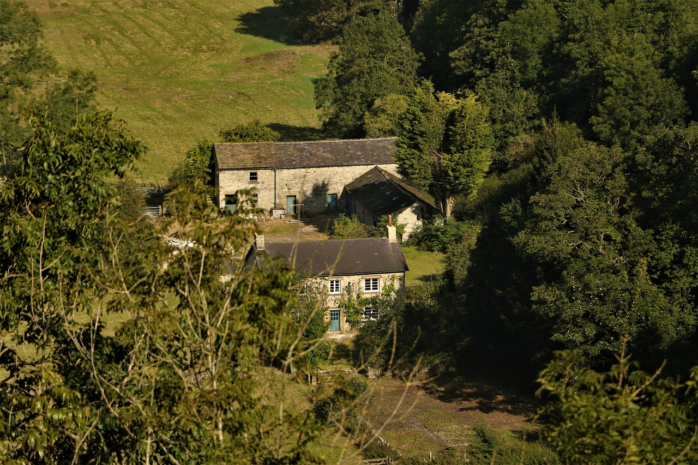
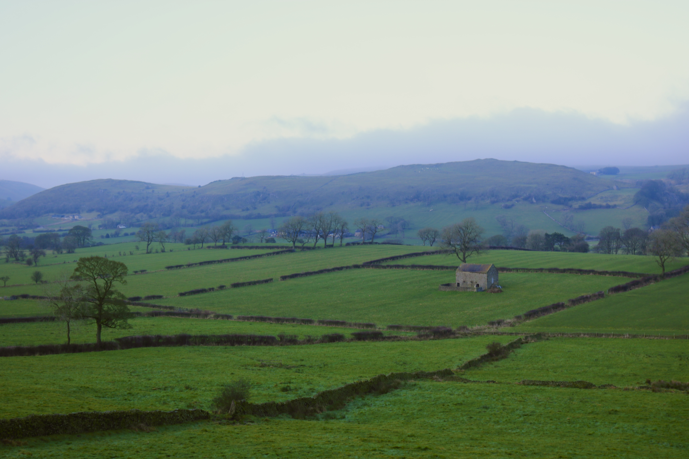

"Beautiful and spotlessly clean cottage in a picturesque location."
{{ description }}
{{ amenity.description }}
Longnor, England, United Kingdom The charming Peak District village of Longnor is situated in beautiful countryside on the Staffordshire Moorlands/Derbyshire border, with the River Dove to the east and the River Manifold to the west, making an excellent touring centre. The village boasts a cobbled market square, a shop, pub, Post Office, café tea room, fish & chip shop and a beautiful church. Chatsworth House, Haddon Hall, the Spa town of Buxton with its famous Opera House, the attractive market town of Bakewell and Alton Towers theme park are all within easy reach.
From Ashbourne Road/A515, continue for 2.2 Miles. Turn right on to Buxton Road and Continue to follow B5053 for 3.3 Miles. Upon arriving in Longnor, turn left onto the High Street. Travel along the High Street for 0.2 Miles and the last road on the left will be Dove Ridge. Follow Dove Ridge all the way to the end and you will arrive at Homestead Cottage.
From Buxton Road/A53, continue for 5.3 Miles. Take the first left just after the Winking Man Pub on you rleft hand side and continue on. After 4.4 Miles, you will arivve in Longnor onto the High Street. Continue on through the village and take the last road on the left, Dove Ridge. Follow Dove Ridge all the way to the end and you will arrive at Homestead Cottage.
General Rules:
Additional Rules:
During your stay at the cottage could you please:
Before Your Leave: